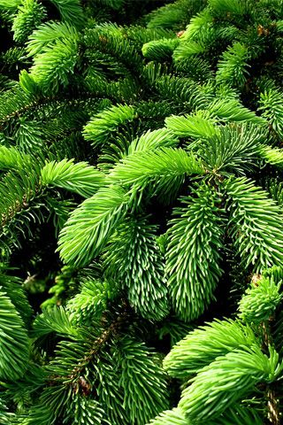
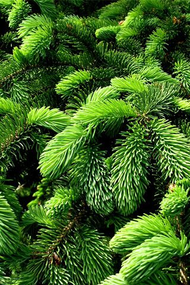

COMPUTER SEES NATURE
An interactive installation that uses machine learning to generate a visualisation of natural phenomena via the human shape. The project explores how computers can be used in creative practice as more than functional tools.
Using photographs of elements found in the nordic forest

 

The underlying system uses a deep learning method called style transfer to distinguish semantic content from texture in an image. Semantic content is the subject—what gives the picture meaning: the scenery, the objects, the people. Style is the texture: patterns, colors, shapes. The system takes content from a live video feed and applies texture from these nature photographs, rendering a new image in real time.


The physical installation consists of a tunnel where the viewer is recorded by a kinect infrared video feed, and mirrored on the other side, as the texture of one of the elements, in real time.

The creative production consisted of developing, designing, and implementing the installation. Underlying system for visualisation is an OpenFrameworks implementation of Logan Engstrom's Fast Style Transfer in TensorFlow.
The installation was exhibited in collaboration with CATCH (Center for Art + Tech), for Click festival, and showcased from May 20th to 21st, 2017, in Kulturværftet, Helsingør.
Also exhibited at:
Opening of Danish Center for Applied AI, the Alexandra Institute – October 27, 2017
Culture Night, IntermediaLab, ITU – October 13, 2017
Convolutional neural networks were trained on the Abacus supercomputer via DeIC grant as a pilot project for ITU, "Computational Creativity and Optimizing for Aesthetics"
The project can be found as a Tensorflow add-on for openFrameworks, courtesy of Ole Kristensen, frame rate about 9 fps on a Nvidia GeForceGTX 1080
The tunnel structure drawn in collaboration with Margrete Bjone Engelien, architect.
Special thanks to: Ole Kristensen for everything & Sarah McGillion for modelling.